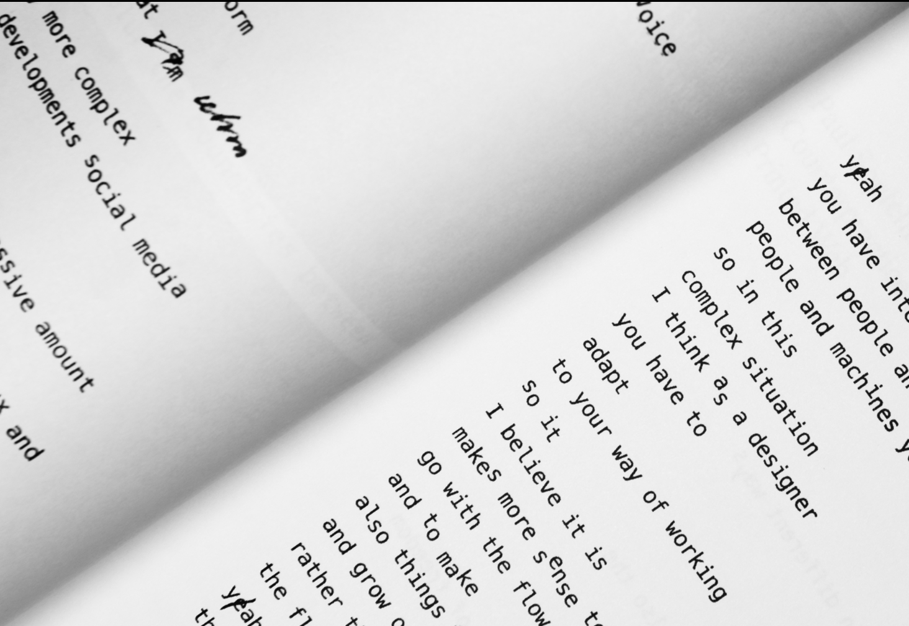
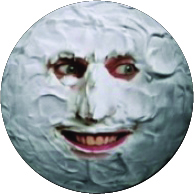
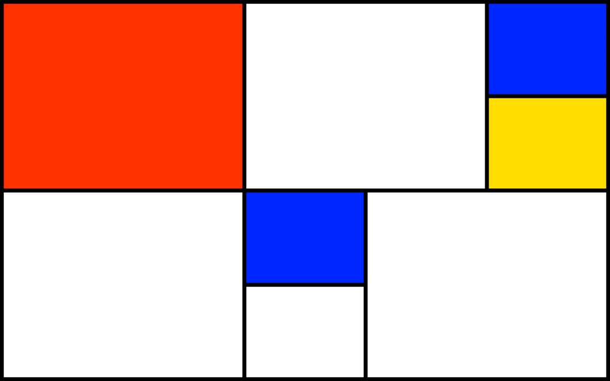
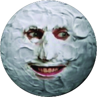
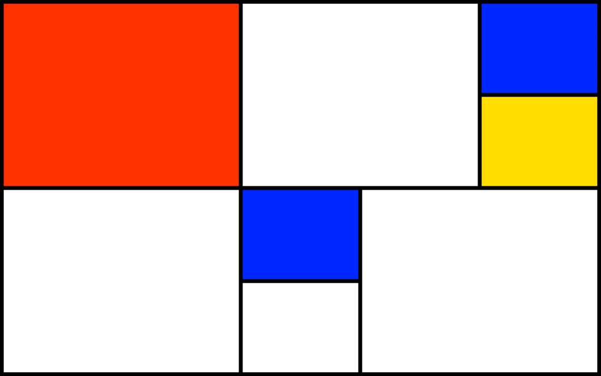

A transcription  of the lecture excerpt by Luna Maurer from Moniker, designed in a way to reflect the content & the speech itself. Luna Maurer is one of the founders of the Amsterdam-based design studio Moniker. They work with the influence of the media and technology on our everyday life and focus on processes rather than products. They use Conditional Design as a term that refers to their approach rather than the chosen media. Briefly, there are three main elements to work with: process, logic and input. The process is the product, and it produces formations rather than forms. Logic is the tool and it is used to design the conditions through which the process can take place. Applied rules are used as constraints, which sharpen the perspective on the process and stimulate play within the limitations. Finally, the input is the main material. It engages logic and activates and influences the process. A monospaced version of an existing typeface by a Swiss type foundry. An essay exploring the establishment of the Einstein's  Spacetime concept in avant-garde art. A transcription of the lecture excerpt by Luna Maurer from Moniker, designed in a way to reflect the content & the speech itself. A book
Spacetime concept in avant-garde art. A transcription of the lecture excerpt by Luna Maurer from Moniker, designed in a way to reflect the content & the speech itself. A book  designed as a visual response to one finding in the secondhand bookshop. A sarcastic bot generating daily astrological forecasts.  So generalized, yet so personal. A lyrics animation music video. A small project  about choosing suitable content to work well with an already existing layout. An essay questioning one of the most famous 'rules' of the graphic design through the years.
designed as a visual response to one finding in the secondhand bookshop. A sarcastic bot generating daily astrological forecasts.  So generalized, yet so personal. A lyrics animation music video. A small project  about choosing suitable content to work well with an already existing layout. An essay questioning one of the most famous 'rules' of the graphic design through the years.